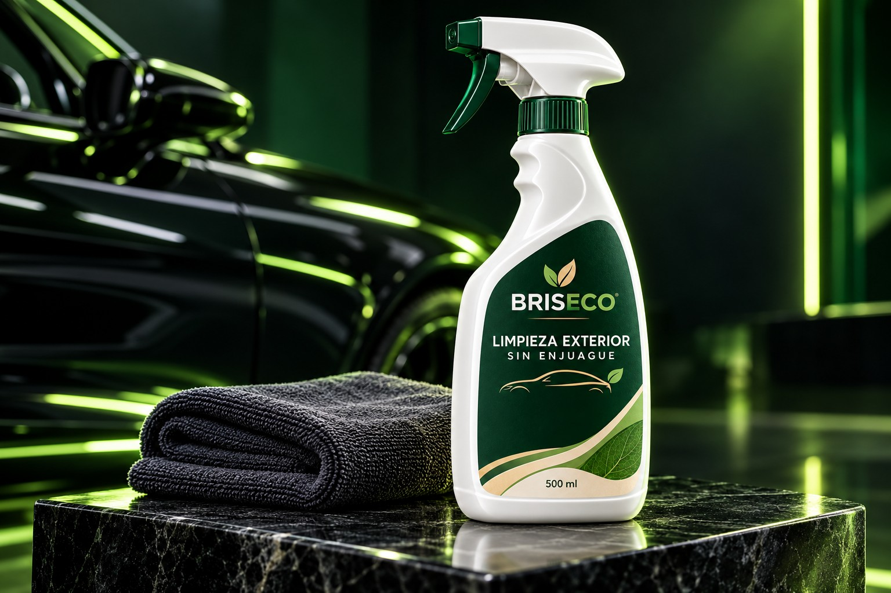
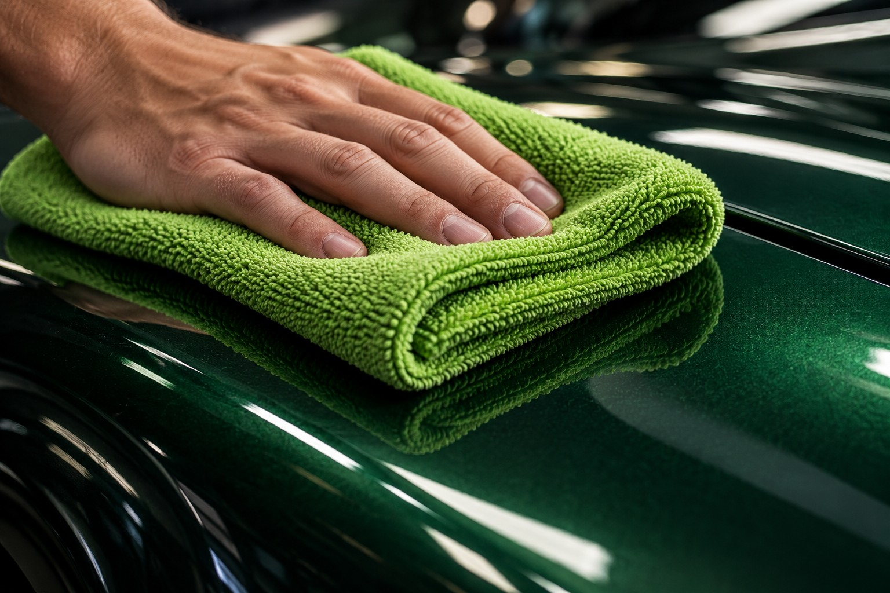
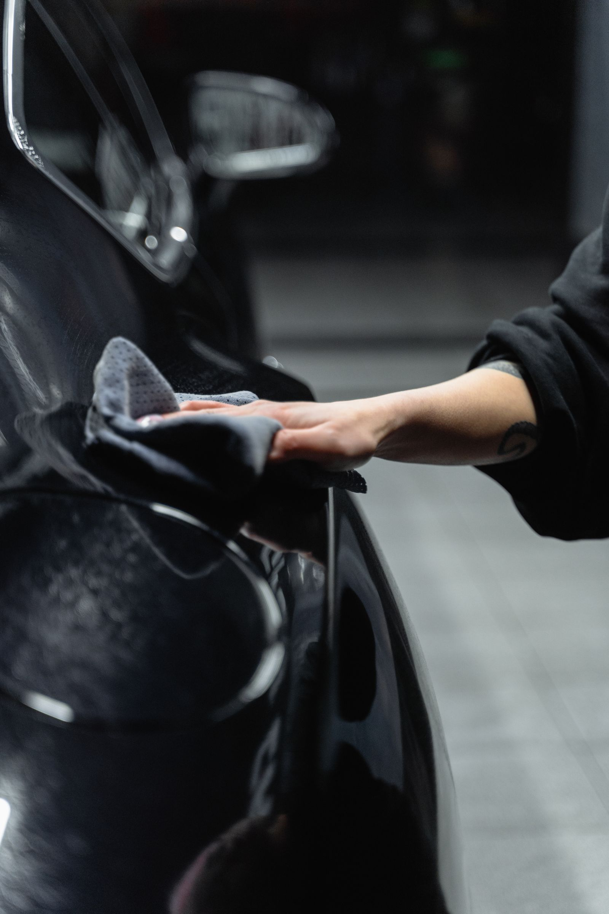

Sin paso de enjuague
La aplicación termina sin añadir un enjuague final. Esto describe la forma de uso; no significa que se pueda usar en cualquier nivel de suciedad.
EL PRODUCTO
BRISECO reúne una botella de 500 ml, microfibra y orientación para mantener el exterior de tu auto cuando aparece polvo o suciedad ligera entre lavados completos.


LO ESENCIAL, BIEN EXPLICADO
El kit está pensado para quienes prefieren cuidar su auto en casa y dedicar unos minutos a revisar la superficie antes de limpiarla. Se usa por secciones y con un paño limpio.
Al consultar puedes preguntar cómo se utiliza, en qué tipo de suciedad conviene y cuál es la disponibilidad actual del producto.
TRES CARACTERÍSTICAS
La aplicación termina sin añadir un enjuague final. Esto describe la forma de uso; no significa que se pueda usar en cualquier nivel de suciedad.
El tamaño permite tener el producto a mano para el mantenimiento ocasional. Consulta el precio y la disponibilidad antes de hacer tu pedido.
Conoce las indicaciones, cómo trabajar por zonas y cuándo es mejor lavar primero el vehículo con otro método.
CÓMO SE PLANTEA SU USO
Observa qué tan sucio está el auto. Si hay lodo, arena o partículas abundantes, elige un lavado adecuado antes de pasar la microfibra.
Sigue las indicaciones del producto y atiende una zona a la vez. Así puedes ver cómo responde la superficie y mantener el paño controlado.
Cuando una parte de la microfibra se ensucie, utiliza una cara limpia para no mover la suciedad de una zona a otra.

Cuando el auto tiene polvo o suciedad superficial y quieres mantener su apariencia entre lavados completos, con tiempo para revisar y limpiar cada sección.
Si observas lodo, arena o suciedad abundante, primero conviene retirar esas partículas con un método de lavado apropiado para evitar arrastrarlas con el paño.
¿TE INTERESA EL KIT?
Pregunta por contenido, forma de uso, precio y disponibilidad actual.